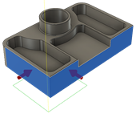

Surface Z
Perçage circulaire XY
Dans la zone de dessin, sélectionnez une ou plusieurs faces du modèle. Les faces sélectionnées déterminent les options Type de palpage' disponibles.
Remarque: pour sélectionner des faces sur le brut, remplacez la valeur de Mode de palpage par Brut.
Exemples de faces sélectionnées et d'options Type de palpage:
|
|
Surface Z |
Perçage circulaire XY |
 |
 |
Paroi X |
Canal Y |
 |
 |
Coin extérieur XY |
Surface Y |